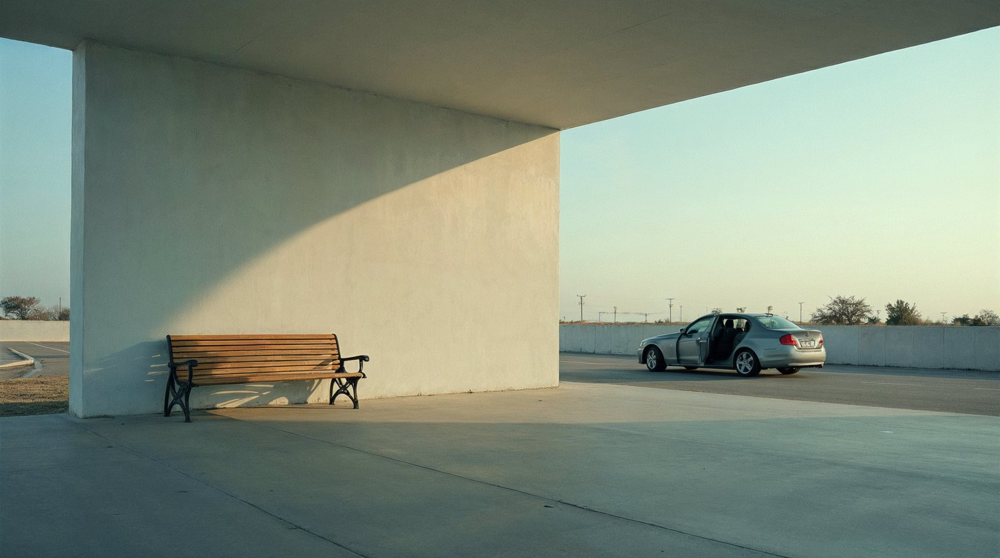
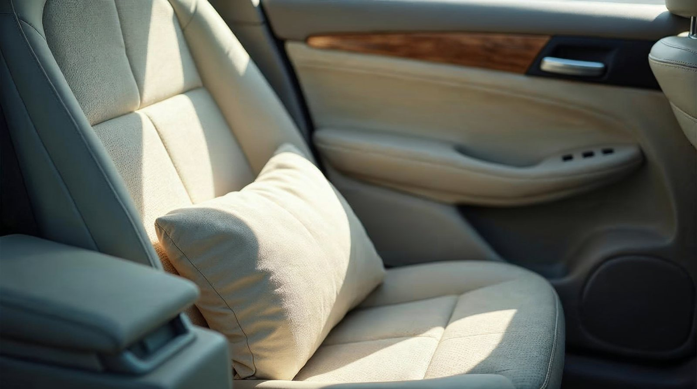
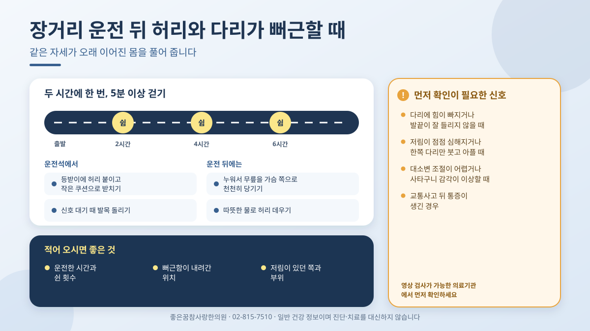

이종호 한의사 감수좋은꿈참사랑한의원 대표원장 (한의사 면허번호 19769)발행 2026-11-22 · 수정 2026-11-26
이 글의 차례
주말에 부모님 댁에 다녀오는 길, 막히는 고속도로를 다섯 시간 넘게 달려 집 앞 주차장에 차를 세웁니다. 운전석 문을 열고 한 발을 내딛는 순간 허리가 한 번에 펴지지 않습니다. 차 지붕을 짚고 잠시 서 있다가 트렁크로 걸어가는데, 오른쪽 엉덩이부터 허벅지 뒤까지 묵직하게 당깁니다.
진료실에서 이런 이야기를 자주 듣습니다. 운전을 오래 했을 뿐인데 다음 날 아침까지 허리가 뻣뻣하다는 말씀입니다. 반가운 얼굴을 보러 간 길이었든, 일 때문에 꼭 다녀와야 했던 길이었든, 몸이 그 길을 고스란히 기억하는 것 같아 속상하셨을 겁니다.
먼저 답부터 드리겠습니다. 장거리 운전 뒤 뻐근함은 대개 같은 자세로 오래 앉아 있던 탓입니다. 1~2시간마다 차를 세우고 내려서 걷고, 출발 전에 시트를 몸에 맞추고, 도착한 뒤에는 천천히 걷고 따뜻하게 데워 풀어 주는 것부터 시작합니다.
다만 다리에 힘이 빠지거나 발목·발가락을 들어 올리기 어렵거나, 대소변이 이상하거나, 엉덩이·사타구니 감각이 둔해졌다면 생활 요령보다 가까운 응급실이 먼저입니다. 한쪽 다리만 갑자기 붓거나 아프거나 붉고 뜨거워졌다면, 그중 하나만 있어도 서둘러 병원에 가셔야 합니다.
왜 장거리 운전 뒤에는 허리와 다리가 뻐근할까요
운전은 그냥 앉아 있는 것과 조금 다릅니다. 두 손은 핸들을, 오른발은 페달을 붙들고, 눈은 앞을 놓치지 않으려 긴장합니다. 사무실 의자처럼 이리저리 고쳐 앉을 수도 없지요. 같은 자세에 긴장까지 더해진 채 몇 시간이 흐르는 셈입니다.
허리 쪽에서 보면, 엉덩이를 앞으로 빼고 등받이에 기대는 순간 허리의 자연스러운 곡선이 펴집니다. 장시간 운전은 이 자세가 오래 이어져 허리 아래쪽이 지치기 쉽습니다. 차가 흔들릴 때마다, 브레이크를 밟을 때마다 몸을 받치는 것도 허리 둘레 근육의 몫입니다.
엉덩이 쪽에서 보면, 오래 눌려 있던 엉덩이 근육이 굳으면 그만큼 허리가 대신 일을 더 합니다. 오른발로 가속 페달과 브레이크를 오가는 동안 오른쪽 엉덩이와 허벅지만 계속 긴장해, 한쪽이 유난히 더 뻐근하다는 분이 많습니다.
다리 쪽에서 보면, 걸을 때 종아리 근육은 다리의 피를 위로 올려 보내는 일을 하는데 앉아만 있으면 그 움직임이 줄어듭니다. 무릎을 구부린 채 오래 있으면 다리가 무겁고 붓는 느낌이 들기 쉽고, 물을 덜 마시고 짠 휴게소 음식을 먹은 날은 더 그렇습니다.
그리고 그날의 몸 상태가 있습니다. 잠을 설치고 새벽에 출발한 날, 차 안이 추웠던 날, 마음이 급했던 날에는 같은 거리를 달려도 더 뻐근합니다. 몸이 차면 근육이 움츠러들고, 잠이 부족하면 같은 통증도 더 크게 느끼기 때문입니다.
허리, 엉덩이, 다리 당김은 이렇게 나눠 봅니다
운전 뒤 불편은 어디가, 어떻게 당기는지에 따라 살필 곳이 달라집니다. 차에서 내려 몇 걸음 걸어 본 뒤 아래 가운데 어디에 가까운지 떠올려 보세요.
허리 가운데나 양옆이 묵직하고, 내려서 걷거나 허리를 펴면 몇 분 안에 풀린다면 오래 같은 자세로 지친 근육 쪽을 먼저 생각합니다. 다음 날 아침까지 남더라도 움직이면 조금씩 덜해지는 경우가 많습니다.
한쪽 엉덩이 깊은 곳이 뻐근하고 그 자리를 누르면 아프다면, 오래 눌려 있던 엉덩이 근육과 골반 주변을 봅니다. 페달을 밟는 오른쪽에 잘 생기고, 뒷주머니에 지갑을 넣은 채 앉는 습관이 있으면 골반이 한쪽으로 기운 채 몇 시간을 버티게 됩니다.
허벅지 뒤가 묵직하게 당기기만 하고 저림은 없으며 걸으면 풀린다면, 무릎을 구부린 채 오래 있던 근육 쪽에 가깝습니다. 다만 허리를 숙일 때 다리 뒤로 당김이 뻗친다면 신경 쪽 문제를 따로 확인합니다.
엉덩이에서 허벅지 뒤를 타고 무릎 아래, 종아리나 발까지 찌릿하게 내려가는 저림은 이야기가 다릅니다. 허리에서 다리로 가는 신경이 눌리면 이런 저림과 힘 빠짐이 함께 나타날 수 있어, 생활 요령보다 진찰을 먼저 권합니다.
양쪽 종아리가 비슷하게 무겁고 붓다가 걷고 다리를 올려 쉬면 가라앉는다면, 오래 앉아 다리의 흐름이 느려진 경우가 많습니다. 반대로 한쪽 다리만 갑자기 붓거나 아프거나 붉고 뜨거워졌다면 혈전일 수 있어, 하나만 있어도 주무르지 말고 서둘러 병원에 가셔야 합니다.
운전한 날 밤에 종아리에 쥐가 나서 깬다면 오래 같은 각도로 버틴 종아리 근육이 지친 것일 수 있습니다. 물을 적게 마셨거나 차 안이 추웠던 날 더 잘 생긴다는 분이 많습니다.
이런 분들을 진료실에서 자주 뵙습니다
특정한 누구의 이야기가 아니라, 장거리 운전 뒤 오시는 분들에게서 자주 겹쳐 보이는 모습입니다.
예를 들어 명절이나 주말마다 부모님 댁을 오가며 막히는 길에서 대여섯 시간씩 운전하는 분이라면, 출발 전에 시트를 맞추고 쉬어 갈 휴게소를 미리 정하는 데서 시작합니다. 운전을 나눌 가족이 있다면 나누시라고 권합니다.
영업이나 배송 일로 하루 대부분을 운전석에서 보내는 분이라면, 쉬는 간격을 아예 일정표에 넣어 두는 것이 먼저입니다. 화장실 때문에 물을 참는 습관이 있다면 몇 모금씩 나누어 마시는 법도 함께 정합니다.
예를 들어 아이를 뒷좌석에 태우고 먼 길을 가는 분이라면, 몸을 비틀어 뒤를 돌아보고 물건을 건네는 일이 잦습니다. 필요한 물건은 출발 전에 아이 손이 닿는 곳에 두고, 꼭 챙겨 줄 일이 생기면 차를 세운 뒤 내려서 건네 보세요. 앉은 채 허리를 비트는 일이 한결 줄어듭니다.
예전에는 네 시간을 내리 달려도 괜찮았는데 요즘은 두 시간만 지나도 허리가 묵직하다는 분이라면, 그 변화를 탓하지 마시라고 말씀드립니다. 복지관 강연에서 드린 말처럼 몸은 지금의 몸인데 마음이 예전 속도를 낼 때가 있습니다. 지금의 몸에 맞춰 쉬는 간격을 당기면 됩니다.

먼저 이렇게 여쭙니다
- 몇 시간을 운전했고, 중간에 몇 번 쉬었나요?
- 운전 몇 시간째부터 불편이 시작됐나요?
- 뻐근함이 허리에만 있나요, 엉덩이나 다리까지 내려가나요?
- 저림이 무릎 아래, 종아리나 발까지 내려가나요?
- 다리에 힘이 빠지거나 대소변이 달라진 느낌은 없나요?
- 평소에도 오래 앉아 지내시나요? 허리를 다친 적이 있나요?
저는 다친 적 없이 생긴 통증을 차 계기판의 경고등에 빗대어 말씀드리곤 합니다. 경고등은 지우기 전에 먼저 읽어야 합니다. 운전 뒤 통증이라면 몇 시간째에 켜졌는지, 내려서 걸으면 몇 분 만에 꺼지는지, 다음 날 아침까지 남는지, 무엇을 하면 덜한지를 여쭙습니다.
운전 뒤 뻐근함은 대개 쉬고 걸으면 가라앉습니다. 하지만 다리 힘 빠짐이나 대소변 이상은 하나만 있어도 쉬면서 기다릴 일이 아니라, 가까운 응급실로 가야 하는 신호입니다. 이 차이를 알고 계시면 괜한 겁은 덜고, 서둘러야 할 때는 놓치지 않으실 수 있습니다.
스스로 점검해 보세요
- 운전 1~2시간이 지나면 허리가 묵직해진다
- 차에서 내릴 때 허리를 한 번에 펴기 어렵다
- 페달을 밟는 쪽 엉덩이와 허벅지가 더 뻐근하다
- 저녁이면 양쪽 종아리가 무겁고 양말 자국이 깊다
- 운전한 날 밤 종아리에 쥐가 난다
- 뻐근함이 다음 날 아침까지 남는다
- 무릎 아래까지 찌릿한 저림이 내려간다
마지막 항목에 해당한다면 개수와 상관없이 진료 때 꼭 말씀해 주세요. 나머지 가운데 세 가지 넘게 해당된다면 쉬는 간격과 시트부터 손보시고, 그래도 되풀이되면 상담을 받아 보세요.
일상에서 먼저 해 볼 수 있는 것
- 1~2시간마다 차를 세우고 내려서 5분 이상 걷기
- 엉덩이를 깊숙이 넣고 허리 뒤에 작은 쿠션 대기
- 브레이크를 끝까지 밟아도 무릎이 살짝 굽게 시트 맞추기
- 물은 몇 모금씩 나누어 마시고, 졸리면 일찍 쉬어 가기
- 도착 뒤 바로 눕지 말고 5~10분 천천히 걷기
- 무거운 짐은 몸이 풀린 뒤 무릎을 굽혀 들기
출발 전, 운전 중, 도착 뒤로 나누어 조금 더 자세히 말씀드리겠습니다. 다 지키려 애쓰기보다 오늘 할 수 있는 한두 가지부터 골라 보세요.
출발 전, 운전석은 이렇게 맞춰 보세요
출발 전 1~2분만 시트를 손보셔도 몇 시간이 달라집니다. 가족이 번갈아 운전하는 차라면 시트가 다른 사람 몸에 맞춰져 있을 때가 많으니 한 번 더 살펴보세요.
엉덩이는 시트 안쪽 깊숙이 붙여 앉습니다. 등받이는 너무 눕히지 말고 살짝만 기울이고, 허리 뒤에 작은 쿠션이나 둘둘 만 수건을 대어 허리 곡선을 받쳐 주세요. 허리를 억지로 꼿꼿하게 세우는 것보다 오래 유지하기 쉽습니다.
시트 앞뒤 거리는 브레이크를 끝까지 밟았을 때 무릎이 살짝 굽어 있는 정도가 좋습니다. 높이는 무릎이 엉덩이보다 높이 올라가지 않게 맞추고, 핸들은 팔꿈치가 살짝 굽은 채 편하게 닿는 거리로 둡니다.
등받이를 많이 눕히면 편해 보여도, 목과 어깨가 앞으로 나와 핸들을 따라가느라 오히려 더 애를 씁니다. 머리 받침은 뒤통수 높이에 맞추고, 거울은 바른 자세로 앉은 뒤에 맞추세요. 자세가 무너지면 거울이 먼저 알려 줍니다.
뒷주머니의 지갑과 휴대전화는 빼고 앉으세요. 두꺼운 외투도 벗고 타면 등받이에 등이 제대로 닿습니다. 작은 물건 하나가 몇 시간 동안 골반을 한쪽으로 기울게 만들 수 있습니다.
겨울 아침 차가운 시트에 바로 앉으면 허리가 더 움츠러듭니다. 열선 시트는 몸을 데우는 데 도움이 되지만, 한 자리를 오래 뜨겁게 두면 저온 화상이 생길 수 있습니다. 당뇨 등으로 감각이 둔한 분은 특히 조심하시고, 몸이 데워지면 온도를 낮춰 주세요.
쉬는 간격과 휴게소에서 할 일
저는 1~2시간마다 차를 세우고 내려서 걸으시라고 말씀드립니다. 졸리거나 허리가 묵직해지면 그보다 일찍 쉬어 가세요. 길이 막히면 간격을 맞추기 어려우니, 출발 전에 쉬어 갈 곳을 두세 군데 정해 두면 마음이 편합니다.
차에서 내리면 먼저 5분쯤 천천히 걸으세요. 화장실까지 일부러 조금 돌아가는 것도 방법입니다. 걷는 동안 종아리가 다시 움직이고, 굳어 있던 엉덩이와 허리도 조금씩 풀립니다.
그다음 아프지 않은 범위에서 몇 가지만 해 봅니다. 억지로 당겨 늘리기보다 내 힘으로 천천히 움직이는 동작이 좋습니다. 시원하면 이어 가고, 저림이 내려가거나 불편이 늘면 바로 멈추세요.
- 두 손을 허리 뒤에 대고 아프지 않은 만큼 천천히 몸 펴기
- 차 문을 짚고 발뒤꿈치를 천천히 들었다 내리기
- 한 발을 뒤로 빼고 뒤꿈치를 바닥에 붙인 채 종아리 늘리기
- 어깨를 귀 쪽으로 올렸다 툭 내리고, 고개를 천천히 좌우로 돌리기
허리를 뒤로 펼 때 오히려 더 아프거나 다리가 저려 온다면 그 동작은 하지 마시고 진료 때 말씀해 주세요. 숙일 때 불편한지, 젖힐 때 불편한지에 따라 권해 드리는 자세가 달라집니다.
운전 중에는 운전에만 마음을 두세요. 풀어 주는 동작은 차를 세운 뒤에 합니다. 막힌 길에서 차가 완전히 멈춰 있을 때 어깨를 한 번 으쓱했다 내리는 정도면 충분합니다.
물도 조금씩 챙기세요. 화장실이 번거로워 물을 거의 안 마시는 분이 많은데, 몇 모금씩 나누어 마시면 부담이 덜하고 쉬어 갈 이유도 자연스럽게 생깁니다. 졸음을 쫓으려 커피만 연달아 드시기보다 물을 곁들이세요.
졸음을 참고 달리는 것은 허리보다 더 큰 위험입니다. 운전 중 졸음을 참기 어려운 날이 잦거나, 가족이 자는 동안 숨이 멈춘다고 말한다면 허리보다 잠을 먼저 확인해 보세요. 수면 검사가 가능한 병원에서 검사를 받아 보시길 권합니다.
도착한 뒤와 다음 날
집에 도착하면 바로 소파에 눕기보다 5~10분 천천히 걸으며 몸을 깨워 주세요. 오래 앉아 굳은 허리로 곧장 숙여 무거운 짐을 들어 올리는 순간이 가장 조심스럽습니다. 트렁크의 짐은 몸이 풀린 뒤에 옮기셔도 늦지 않습니다.
짐을 들 때는 허리를 숙이기보다 무릎을 굽혀 몸 가까이 붙여 드세요. 한 번에 다 옮기려 하지 말고 나누어 옮기시고, 무거운 것은 가족과 함께 듭니다.
뻐근한 허리와 엉덩이는 따뜻한 물로 샤워하거나 15~20분쯤 따뜻하게 찜질해 보세요. 데운 뒤 시원하게 풀리면 지금 몸에 맞는 쪽이고, 쥐가 나거나 욱신거림이 늘면 멈춥니다. 찜질기를 켠 채 잠들지는 마세요.
다리가 무거운 날은 잠들기 전 10~15분쯤 다리를 심장보다 조금 높게 올려 두고 쉬세요. 바로 누울 때 무릎 아래에 베개를 받치면 허리가 한결 편합니다. 아침에 일어날 때는 옆으로 돌아누운 뒤 팔로 밀며 천천히 일어나 보세요.
다음 날은 하루 종일 누워 있기보다 평소 걷는 정도로 몸을 움직여 주세요. 하던 운동이 있다면 며칠은 강도를 조금 낮추고, 운동한 이튿날 불편이 늘지 않는지 보며 천천히 되돌리면 됩니다.

한의원에서 함께 살필 수 있는 경우
- 운전한 날마다 허리와 엉덩이가 뻣뻣해 다음 날까지 가는 경우
- 페달 쪽 엉덩이와 다리만 되풀이해 무거운 경우
- 오래 앉은 뒤 허리와 함께 다리가 무겁고 찬 경우
- 운전 피로가 쌓인 날 잠과 통증이 함께 흔들리는 경우
처음 오시면 운전 시간과 쉬는 간격, 어디가 어떻게 당기는지를 먼저 듣습니다. 이어서 맥을 짚으며 잠은 어떤지, 식사와 소화는 편한지, 몸이 차지는 않은지, 대소변은 괜찮은지 함께 여쭙습니다.
그다음 서 있는 모습과 걷는 모습을 보고, 허리와 골반을 움직여 보며 누르면 아픈 자리와 다리 힘, 저림 같은 신경 증상을 확인합니다. 좌우 균형을 먼저 보고 앞뒤 곡선을 다음에 봅니다.
필요하다고 판단되면 초음파로 근육과 힘줄 주변을 함께 봅니다. 다만 허리 디스크와 척추 안쪽 신경은 초음파로 보기 어려워, 다리 저림이나 힘 빠짐이 뚜렷하면 영상 검사가 가능한 의료기관을 먼저 안내합니다.
치료는 상태에 맞춰 침·약침·추나 등 가운데 고릅니다. 많이 받는다고 좋은 것이 아니라 오늘 상태에 맞는 것을 고르는 일이 먼저입니다. 추나는 뚝 소리를 내는 것이 목표가 아니고, 신경 증상이 있으면 더 신중하게 정합니다.
치료 중에 자세나 온도, 자극이 불편하면 언제든 말씀해 주세요. 치료를 마치면 시원하신지, 괜찮으신지 여쭙고, 불편하다고 하시면 다시 봅니다. 귀가 전에는 다음 운전 때 지킬 쉬는 간격과 시트 위치를 함께 정해 드립니다.
몇 번 와야 하느냐는 질문도 받습니다. 운전 습관과 몸 상태에 따라 달라서 처음부터 횟수를 약속하지 않고, 진료를 이어 가며 달라진 점을 보고 다음 계획을 정합니다. 추나요법의 건강보험 적용 여부와 조건은 방문 전 전화(02-815-7510)로 확인해 주세요.

이렇게 기록해 오시면 상담이 쉬워집니다
- 운전한 시간과 쉰 횟수, 불편이 시작된 시점
- 뻐근함이 내려간 위치(허리, 엉덩이, 허벅지, 종아리, 발)
- 저림이 있었다면 어느 쪽, 어디까지였는지
- 내려서 걸었을 때 풀리기까지 걸린 시간
- 이전 허리 검사 결과지와 복용 중인 약
시트 위치가 궁금하시면 운전석에 앉은 모습을 옆에서 찍은 사진 한 장을 가져오셔도 좋습니다. 엉덩이가 얼마나 앞으로 빠져 있는지, 무릎과 팔이 얼마나 펴져 있는지 함께 보며 이야기를 나눌 수 있습니다.
이런 증상은 먼저 확인이 필요합니다
- 다리에 힘이 빠지거나 발목·발가락을 들어 올리기 어려운 경우
- 대소변이 이상하거나 안장이 닿는 부위 감각이 둔해진 경우
이런 신호가 있으면 한의원보다 가까운 병원이나 응급실을 먼저 찾으세요.
마치며
운전대를 놓을 수 없는 분이 많습니다. 일 때문에, 가족 때문에, 또 그 길 끝에서 만날 사람 때문에요. 그래서 저는 운전을 줄이시라는 말보다, 그 길 위에서 허리가 덜 지치는 방법을 함께 찾고 싶습니다.
예전에는 안 아프게 해 드리는 것만으로도 벅찼는데, 지금은 거기서 한 걸음 더 가고 싶다고 강연에서 말씀드린 적이 있습니다. 다리에 힘이 있어 여행도 다니고 하고 싶은 일을 하며 사시는 것. 먼 길을 운전해 가족을 만나러 가는 일도 그런 하고 싶은 일 가운데 하나일 수 있습니다.
다음에 진료실에서 뵈면 저는 몇 시간째 운전에서 허리가 신호를 보냈는지, 그리고 다리 어디까지 당겼는지부터 여쭙겠습니다. 그 이야기를 들으며 다시 맥을 짚겠습니다.
함께 읽으면 좋은 글
- 오래 앉아 있으면 허리가 아플 때 한의원에서는 무엇을 먼저 묻나요?
- 허리 디스크 초기 신호와 다리 저림은 어떻게 구분하나요?
- 오래 앉아 공부하거나 일할 때 허리와 골반은 얼마 간격으로 쉬어 주나요?

여쭙는 것
- 몇 시간을 운전했고, 중간에 몇 번 쉬었나요?
- 운전 몇 시간째부터 불편이 시작됐나요?
- 뻐근함이 허리에만 있나요, 엉덩이나 다리까지 내려가나요?
생활에서 해 볼 것
- 1~2시간마다 차를 세우고 내려서 5분 이상 걷기
- 엉덩이를 깊숙이 넣고 허리 뒤에 작은 쿠션 대기
- 브레이크를 끝까지 밟아도 무릎이 살짝 굽게 시트 맞추기
한의원에서 함께 살필 것
- 운전한 날마다 허리와 엉덩이가 뻣뻣해 다음 날까지 가는 경우
- 페달 쪽 엉덩이와 다리만 되풀이해 무거운 경우
- 오래 앉은 뒤 허리와 함께 다리가 무겁고 찬 경우
먼저 확인이 필요한 신호
- 다리에 힘이 빠지거나 발목·발가락을 들어 올리기 어려운 경우
- 대소변이 이상하거나 안장이 닿는 부위 감각이 둔해진 경우
한눈에 보는 표
| 구분 | 핵심 |
|---|---|
| 여쭙는 것 | 몇 시간을 운전했고, 중간에 몇 번 쉬었나요? 운전 몇 시간째부터 불편이 시작됐나요? |
| 생활에서 해 볼 것 | 1~2시간마다 차를 세우고 내려서 5분 이상 걷기 엉덩이를 깊숙이 넣고 허리 뒤에 작은 쿠션 대기 |
| 한의원에서 함께 살필 것 | 운전한 날마다 허리와 엉덩이가 뻣뻣해 다음 날까지 가는 경우 페달 쪽 엉덩이와 다리만 되풀이해 무거운 경우 |
| 먼저 확인이 필요한 신호 | 다리에 힘이 빠지거나 발목·발가락을 들어 올리기 어려운 경우 대소변이 이상하거나 안장이 닿는 부위 감각이 둔해진 경우 |
자주 묻는 질문
장거리 운전 중에는 얼마나 자주 쉬어야 하나요?
1~2시간마다 차를 세우고 내려서 5분 이상 걸으시길 권합니다. 졸리거나 허리가 묵직해지면 그보다 일찍 쉬어 가세요.
운전석 시트는 어떻게 맞추나요?
엉덩이를 깊숙이 넣고 등받이를 너무 눕히지 않으며 허리 뒤에 작은 쿠션을 대 보세요. 브레이크를 끝까지 밟아도 무릎이 살짝 굽는 거리가 좋습니다.
운전 뒤 허리가 뻐근하면 추나를 받아도 되나요?
다리 힘 빠짐이나 대소변 이상 같은 신호가 없는지 먼저 확인하고, 진찰 뒤 필요하다고 판단될 때 정합니다. 신경 증상이 있으면 더 신중하게 판단합니다.
한쪽 종아리만 붓고 아프면 주물러도 되나요?
한쪽 다리만 갑자기 붓거나 아프거나 붉고 뜨거워졌다면, 하나만 있어도 주무르지 말고 서둘러 병원 진료를 받으세요. 숨이 차거나 가슴이 아프면 가까운 응급실로 가셔야 합니다.
좋은꿈참사랑한의원은 재진 때 지난번 이야기부터 이어서 여쭙니다. 진료시간과 예약은 오시는 길에서 확인하세요.
어디서 상담받을 수 있나요?
좋은꿈참사랑한의원은 서울 동작구 만양로2길 2 신성빌딩 3층·5층(서울 동작구 상도동, 7호선 상도역 3번 출구 근처)에 있습니다. 한의사 3명(이종호 대표원장, 조영기 수석진료원장, 정원영 진료원장)이 진료합니다. 진료시간은 평일 09:30~20:00(점심 13:00~14:00), 토·일·공휴일 09:30~15:00이며, 방문 전 전화로 확인을 권합니다. 예약은 네이버 예약, 카카오톡 상담, 전화 02-815-7510로 받습니다.
이 글은 일반적인 건강 정보이며 개인의 진단이나 치료를 대신하지 않습니다. 증상이 있거나 복용 중인 약이 있다면 진료를 통해 확인하세요. 치료 효과는 개인마다 다를 수 있습니다.
작성 기준: 일반적으로 알려져 있는 건강 정보를 참고해 정리했습니다(대표원장 감수). 증상 기록은 1~2주 동안 하루 1회, 비슷한 시간에 적어 오시면 지난 상태와 비교하기 쉽습니다.